← 返回阅读库 · 原论文目录
论文讲解阅读文档 · 表征学习 · v158
Directional SSL for Heavy Image Augmentations[2110.13555]
视频时长 00:06:30；讲解文字 3,049 字符；提取讲解画面 23 张。按视频原顺序阅读，每段文字保留时间戳。
文字来自整段视频的自动语音转写，按自然停顿分段，并与 PPT / 论文页面 / 演示画面对齐。未将讲解压缩为摘要；术语、数字和口述公式请结合画面及原论文核对。 阅读稿已校正规范部分明确术语误识别；原始逐字稿和每处修改记录另行保留。
讲解画面为源视频截图（640×360），不是可编辑 PPT 文件。全片按每秒 2 帧扫描内容变化，逐步展开页保留；连续动画保留代表画面。清晰度受源视频限制。
下载完整资料包 · 含离线 HTML、PDF、Word、全部 PPT 画面和字幕。
原论文与材料
Directional Self-supervised Learning for Heavy Image Augmentations · 下载完整 PDF（11 页）
按时间阅读
00:00:00–00:00:23 · 画面 001
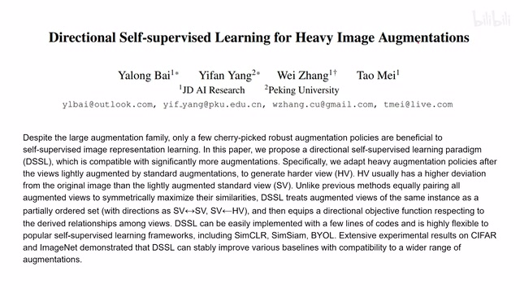
00:00:00–00:00:23 · 画面 001大家好啊，今天我们来快速说一篇论文，Directional Self-Supervised Learning for Heavy Image Augmentation。那这篇论文呢，就是用一个小的 trick，让我们的这个 Self-Supervised Learning 这个学习的过程中呢，更好的应对这个 Heavy Augmented 的这个 Image，也就是被 Augmented 到妈都不认识的那种图像。那么思路呢也是非常简单，我们直接来看，总体来说呢，就是我们随着 Data Augmentation 它的程度的不断加强
00:00:23–00:01:23 · 画面 002
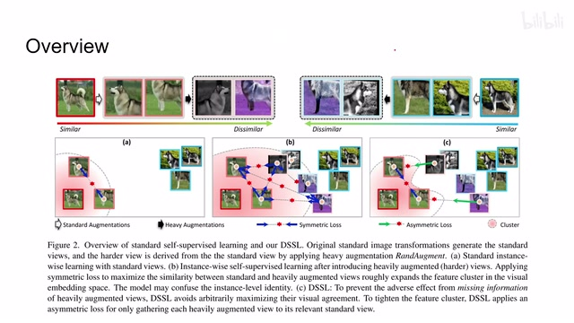
00:00:23–00:01:23 · 画面 002最后呢，加强到一定程度，实在是难以辨认了。那这个时候我们如果还是把这种图像视为原来的图像的话，它会产生一些问题。因为原来在我们的这个 loss 的设计当中呢，所有的这个样本主要它是正样本，它们的 loss 就是对称的，也就是说这些样本拥有相同的发言权，它们共同商议商议出一个中心出来。那么这个中心呢，就是我们聚类的中心但实际上作者认为，对于这种程度的增强的图像，我们最低的底线是可以接受它是我们这一类的图像，但是我们坚决不能向这个方向靠拢。所以本文作者提出了一种非对称的 loss
其实就是把原来的 loss 看去一半啊，改成非对称的。那么这样子呢，让这些 hard example 这些 heavy augmented 这些 example 向我们的这个聚类中心靠拢，但是呢我们不会向他们靠拢。那这个呢是本文的这个核心的思想。那举个简单的例子对吧，草莓小笼包这个巧克力小笼包对吧
00:01:23–00:01:24 · 画面 003
00:01:23–00:01:24 · 画面 00300:01:24–00:01:25 · 画面 004
00:01:24–00:01:25 · 画面 00400:01:25–00:01:49 · 画面 005
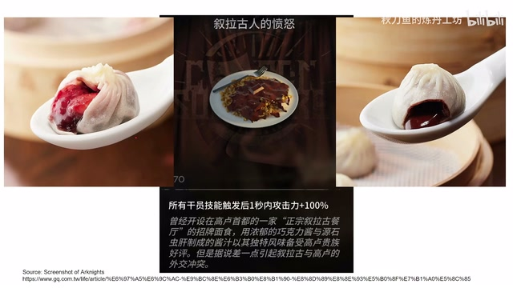
00:01:25–00:01:49 · 画面 005还有什么巧克力酱意大利面对不对，这些东西我们视之为异端啊，我们的最低的标准是可以接纳他们啊，我们认为他们啊这还算小笼包，这还算意大利面啊，但是呢我们坚决不能让我们的这个聚类的中心像这种玩意儿靠拢。那么下面呢我们就来看具体的实现吧
00:01:49–00:03:18 · 画面 006
00:01:49–00:03:18 · 画面 006那么首先我们拿到原始图像，先进行标准的 data augmentation，这一点呢跟这个标准的 ssl 它的框架是一样的。那么随后呢，我们在这个增强过的这个图像的基础上再对它进行一个强的这个 data augmentation，那得到这一串图像那这些呢我们就称之为异端，它们的 loss 呢我们只计算单向的，就是只让它们的 representation 向我们的聚类中心靠拢，但是呢不会因为这些样本去移动我们的聚类中心。那么在我们的实际框架中你可以看到这样，那假如说我们把上下这个边缘的这两只去掉，这个就是一个标准的 SSL，你就正常做，比如说这里作者用了这个 SimSiam 、SimCLR 还有这个 BYOL 这些东西，你就都正常做也没问题。那现在呢，本文有了这个 Heavy Augmented Image
那么首先还是再强调这个图像是根据这个 standard augmented image 出来的。那么然后呢，这个计算 loss 的时候我们只是单向的，把这个 representation 向这个 standard augmented 的这个 image 推动，只是单向的这么一个推动，这个呢就是本文的核心的贡献。那么来看到伪代码这里，以这个 SimSiam 为例子，那这里呢这个输入呢不应该是 l 而是这个 v 和这个 v'这个呢是做 heavy data augmentation，然后呢把他们都送到这个 encoder 送到这个 projector 里面，然后看 loss 这个环节。那么首先弱增强的两个样本他们相互靠拢，一个是 z 到这个 y prime，一个是 z prime 到这个 y，这个呢是一个对称的 loss。那随后呢是我们强增强的两个 loss，这个 z hat 和这个 z prime hat 他们呢向着我们标准增强的这个 y 和这个 y prime 靠拢
00:03:18–00:03:19 · 画面 007
00:03:18–00:03:19 · 画面 00700:03:19–00:03:39 · 画面 008
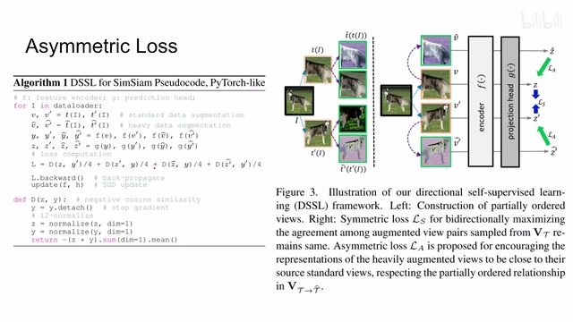
00:03:19–00:03:39 · 画面 008那注意这里的对应呢是从它升升它，那么就从它对应回它，那这边呢也是一样的，所以这只是一个单向 loss，就没有反过来的这个环节。那么以上呢就是本文的主要的技术细节，下面直接来看作者汇报的结果。那么作者使用了这个 SimCLR 和这个 BYOL 还有 SimSiam，那 BYOL 和 SimSiam 它都是非对称的一个结构，它中间就有一支是需要停止梯度的
00:03:39–00:03:41 · 画面 009
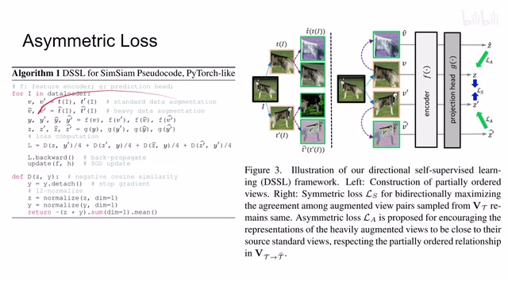
00:03:39–00:03:41 · 画面 00900:03:41–00:03:43 · 画面 010
00:03:41–00:03:43 · 画面 01000:03:43–00:04:41 · 画面 011
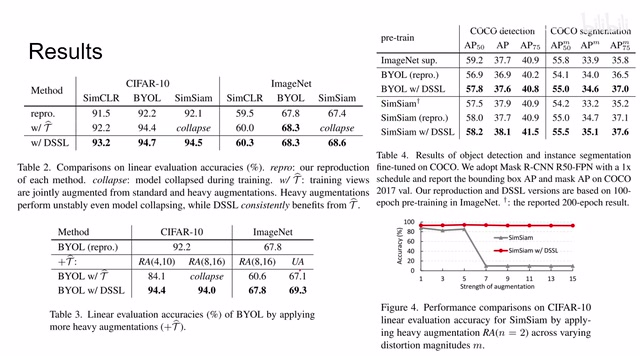
00:03:43–00:04:41 · 画面 011所以它们很自然的呢就可以形成一个非对称的这个 loss。而对于这个 SimCLR 呢，你记得在给这个 heavy augmented image 计算 loss 的时候，把我们这个标准的这个 augmented 这个 image 它的这个梯度给它停掉就可以了。那这边你可以看到不同的数据集，第一行呢是这个原始的标准的性能。
那么第二行呢是加了这个 Heavy Augmented 的这个图像之后，SimSiam 呢就开始崩溃了。那么最后呢是用了本文的这个方法性能的提升。那这边有 BYOL 还有这个 SimSiam，根据不同的这个 Data Augmentation 的强度来，可以看到这个 Augmentation 强过某一个程度呢，这个 SimSiam 就直接崩溃了。那么最后呢，这边是这个其他的下游任务，像这个 Segmentation 还有这个 Detection 都有一个提升。那这边呢是不同的 Hyper Parameter。
00:04:41–00:04:42 · 画面 012
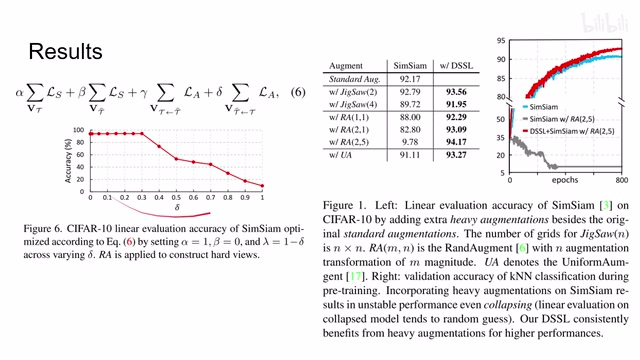
00:04:41–00:04:42 · 画面 01200:04:42–00:05:03 · 画面 013
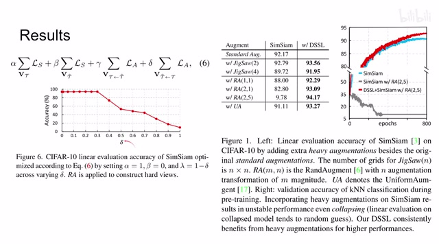
00:04:42–00:05:03 · 画面 013那本质上这个 loss 呢可以写成这么一个通用的形式。这边呢是这个 standard augmented image 它的这个对称的 loss。这边呢是 heavy augmented image 它的这个对称的 loss。那这边呢是从这个 heavy 到 standard 它的这个非对称的 loss。那这边反过来嘛，从 standard 到 heavy 它的一个非对称的 loss。这里的评估呢就是去掉这个 heavy 的它的这个对称的 loss，同时呢逐渐减少这个从 heavy 到 standard 的这个权重。
00:05:03–00:05:04 · 画面 014
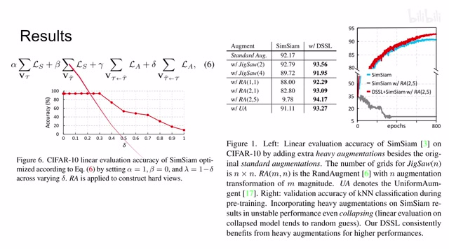
00:05:03–00:05:04 · 画面 01400:05:04–00:05:28 · 画面 015
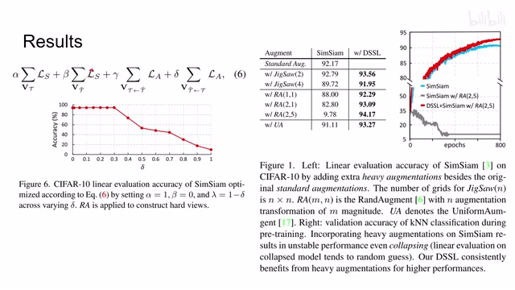
00:05:04–00:05:28 · 画面 015增大这个从 standard 到 heavy 的这一项权重。可以看到这边性能是逐渐下降的。那这里又有一个 typo，这里应该指的是这个 gamma 这个值。那这边这个图呢更加详细的向我们展示了在这个 heavy data augmentation 的时候，这个 SimSiam 是怎么崩溃的。那包括这边作者不同的配置。那么当然作者的探索并不局限于此，我们来看到这里。这里呢作者尝试了不同的这个 data augmentation 还有计算这个 loss 的方法。那像这种。
00:05:28–00:05:32 · 画面 016
00:05:28–00:05:32 · 画面 01600:05:32–00:05:33 · 画面 017
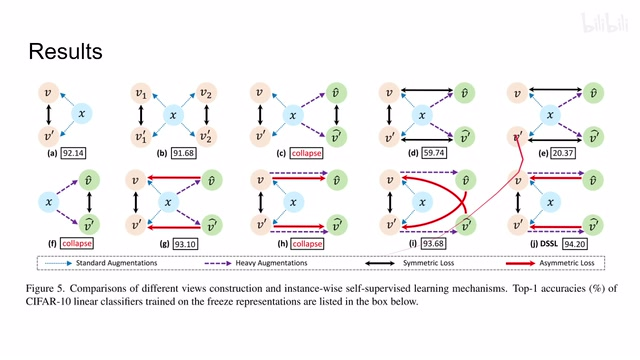
00:05:32–00:05:33 · 画面 01700:05:33–00:05:51 · 画面 018
00:05:33–00:05:51 · 画面 018蓝色的这个虚线的箭头呢就是标准 data augmentation。那么这个紫色呢是这个 heavy。这种黑色实心呢是这个对称的 loss。红色呢是非对称的 loss。那本文的方法呢是这种。你可以看到这个 heavy 的图像呢是从 novel 里面在做这个 heavy 做出来的。那对比一下呢，很接近的是这种就是从这个原始图像做 heavy 做出来的一个图像。
00:05:51–00:05:52 · 画面 019
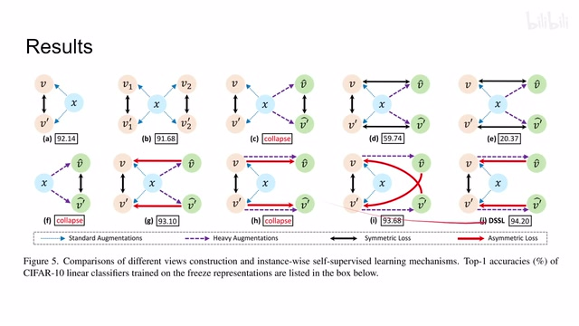
00:05:51–00:05:52 · 画面 01900:05:52–00:06:05 · 画面 020
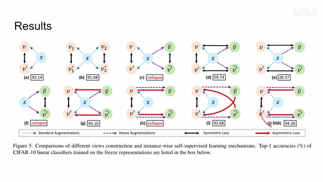
00:05:52–00:06:05 · 画面 020那么还有这种非对称呢指向另外的一个样本啊，这个也是了，跟我们这个本文的实现的最佳结果呢也很接近。那总的来说呢，这是一个简单的 trick，能够改善这个 self-supervised learning 的性能，特别是加入这种强的 data augmentation 之后，让我们的这个 self-supervised learning 的框架呢能够更好的应对这些麻烦的样本。那挺有意思的一个工作，好的，那么感谢您的收看，再见。
00:06:05–00:06:06 · 画面 021
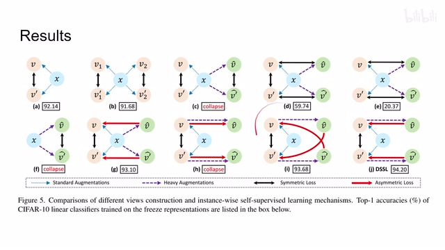
00:06:05–00:06:06 · 画面 02100:06:06–00:06:29 · 画面 022
00:06:06–00:06:29 · 画面 02200:06:29–00:06:30 · 画面 023
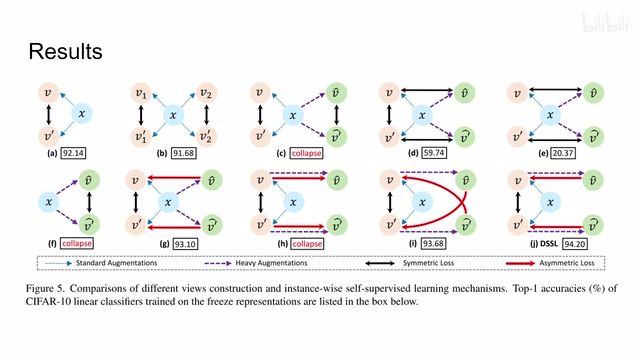
00:06:29–00:06:30 · 画面 023转写与来源说明 · 0 个自动复核提示
保留 16 个原始语音片段，0 个片段触发自动复核提示。提示仅用于定位可能的术语、重复或识别问题，不等于已确认错误。
讲解画面为源视频截图（640×360），不是可编辑 PPT 文件。全片按每秒 2 帧扫描内容变化，逐步展开页保留；连续动画保留代表画面。清晰度受源视频限制。
原视频：paper/合集_2026-10-16_表征学习/[论文简析]Directional SSL for Heavy Image Augmentations[2110.13555].mp4
SHA-256：59d0ad8f2d93b4e4648b94f79c9047bd9fe5718947a5cde518478dc92db15104
全文按视频语音与画面制作。原论文可从上方链接下载；完整资料包保留全文、原始逐字稿、字幕和校对记录。